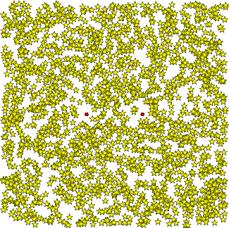

<!DOCTYPE html PUBLIC "-//W3C//DTD HTML 4.01 Transitional//EN">
<html>
  <head>
    <title>Computer Programs in Seismology Tutorials</title>
        <meta charset="utf-8">
        <meta name="viewport" content="width=device-width, initial-scale=1.0">
        <title>Simple.css Test Page</title>
        <!-- The following are some stylesheets for testing -->
        <!-- Sanitize.css reset -->
        <!-- <link href="https://unpkg.com/sanitize.css" rel="stylesheet" /> -->
        <!-- Latest release version of Simple.css -->
        <!-- <link rel="stylesheet" href="https://unpkg.com/simpledotcss/simple.css"> -->
        <!-- Latest commit from GitHub -->
        <!-- <link rel="stylesheet" href="https://cdn.simplecss.org/simple.css"> -->
        <!-- Local version -->
        <link rel="stylesheet" href="nsimple.css">
  </head>
  <body bgcolor="#FFFFFF">
<header><h1>Computer Programs in Seismology Tutorial</h1> <h2>Phase velocity from do_mft</h2></header>
    <h2>Introduction</h2>
<p>
This documents the modification of <b>do_mft</b> and <b>sacmft96</b> to estimate phase velocities from empirical Green's functions.
</p>
    <h2>Distribution</h2>
    <p>The sample data set and other scripts can be obtained by
      downloading <a href="Dist.tgz"> Dist.tgz</a> and then unpacking
      with the command 
<pre>
gunzip -c Dist.tgz | tar xf -
cd EMPIRICAL_GREEN/DIST
</pre>
</p>
    <p> In that folder you will find the following files:<br>
    </p>
<pre>EMPIRICAL_GREEN/DIST/<br>&nbsp;&nbsp;&nbsp;&nbsp;&nbsp;&nbsp;&nbsp;&nbsp;&nbsp;&nbsp;&nbsp;&nbsp;&nbsp;&nbsp;&nbsp;&nbsp;&nbsp;&nbsp;&nbsp; |--/RANDOM4/<br>                    |          |--DOIT            <br>                    |          |--MFTDOOVERLAY<br>                    |          |--PHVDOOVERLAY<br>                    |          |--DOCLEAN<br>                    |          |--CUS.mod<br>                    |<br>                    |--/EXAMPLE1/<br>                    |          |--DOSRF<br>                    |          |--MFTDOOVERLAY<br>                    |          |--PHVDOOVERLAY<br>                    |          |--DOCLEAN<br>                    |          |--SIUCBHZBLOBHZ.WSTK<br>                    |          |--CUS.mod <br>                    |<br>                    |--/EXAMPLE.GRN/<br>                               |--CUS.mod<br>                               |--DOIT<br>                               |--DOCLEAN<br></pre>
</p>
    <h2>Sac files</h2>
<p>
    In order to use Sac files that are not created by the Computer
    Programs in Seismology codes, one must be careful about the
    following header values:<br>
    <br>
    <ul>
      <li>The O header that sets the origin time must be set</li>
      <li>The DIST header which gives epicentral distance in km must be
        defined .<br>
      </li>
      <li>The USER1 and USER2 headers define the minimum and maximum
        periods permitted for processing. If uncertain about these
        values, set each to -12345. using the <i>ch </i>command in <b>sac/gsac</b>.
        The reason for this specific restriction is that spectral
        amplitudes should not be used outside the acceptable bandpass
        region.</li>
    </ul>
</p><p>
    If in doubt, look at the header values of the sample
    cross-correlation in the file SIUCBHZBLOBHZ.WSTK in
    EMPIRICAL_GREEN/DIST/EXAMPLE1<br>
    <h2>Theory</h2>
<p>
    The detailed theory is given in <a href="MFT.pdf"> MFT.pdf</a><br>
    </p>
    <h2>Program Usage</h2>
    <p>This discussion uses the files in the sub-directory
      EMPIRICAL_GREEN/DIST/EXAMPLE1.&nbsp; The tutorial on&nbsp; the use
      of <b>do_mft </b>is&nbsp; <a href="example1.html">here</a>. <br>
    </p>
    <h2>Tests</h2>
    <h3>Simulation of a noise field<br>
    </h3>
    <p>The critical relationship for the determination of phase
      velocities is the phase correction applied in Equation (6) of the
      document MFT.pdf.</p>
    <p>Consider the sub-directory EMPIRICAL_GREEN/DIST/EXAMPLE4.&nbsp;
      The DOIT script creates a data set consisting of MAXSRC time
      segments, each of which has 20 source events distributed randomly
      in a source region 1600 km x 1600 km. Two stations are at
      coordinates (-200,0) and (200, 0 ) on this grid.&nbsp; The random
      source coordinates and station coordinates in km are converted to
      latitude and longitude in order to create a map.&nbsp; For the
      demonstration script, the values of these parameters are
      MAXSRC=100 and SUBSOURCE takes the vales 00, 01, ..., 19. A larger
      value of MAXSRC will yield better results, but the computations
      will take longer.&nbsp; <br>
    </p>
    <p>The idea is to create MAXSRC time series, representing the
      different noise segments used with real data. Each of this time
      series consists of the waveforms or 20 randomly distributed
      sources. This approach is use to emulate processing of real noise
      data.<br>
    </p>
    <p>The current DOIT script does the following:<br>
    </p>
    <ul>
      <li>Generates the eigenfunctions and dispersion for the CUS.mod
        velocity model for a source depth of 0.01 km.</li>
      <li>For each time segment (from 0 to MAXSRC -1)</li>
      <ul>
        <li>Loop over the subsources, then</li>
        <ul>
          <li>Define the spatial coordinates of the subsource<br>
          </li>
          <li>Define a random orientation for a point source applied at
            the subsource<br>
          </li>
          <li>Compute fundamental mode Green's functions to&nbsp; each
            of the two stations</li>
          <li>Apply the source to create Z, N and E seismograms from the
            seismograms for the particular force function<br>
          </li>
          <li>Store the Z, E and E seismograms in the sub-directories
            POS1 and POS2 with a name such as 44.17.Z, which represents
            the Z component seismogram for time segment 44 and subsource
            17. The POS1 and POS2 contain the individual time histories
            at receiver positions 1 and 2.<br>
          </li>
        </ul>
        <li>Stack the subsource contributions to each seismogram and
          store appropriately in the sub-directories STACK1 or STACK2
          with a name such as 44.Z, which represents the Z component
          seismogram for the time segment 44. <br>
        </li>
        <li>Cross-correlate the components between the stations and save
          the result in sub-directory CORR.&nbsp; For example,
          STACK1/44.Z cross-correlated with STACK2/44.Z will result in
          CORR/44.Z1Z2.&nbsp; All nine possible cross-correlations are
          saved, for example, CORR/44.E1E2, &nbsp; CORR/44.E1Z2,
          &nbsp;&nbsp; CORR/44.N1N2, &nbsp;&nbsp; CORR/44.Z1E2,
          &nbsp;&nbsp; CORR/44.Z1Z2,<br>
          CORR/44.E1N2, &nbsp;&nbsp; CORR/44.N1E2, &nbsp;&nbsp;
          CORR/44.N1Z2, and&nbsp; CORR/44.Z1N2.</li>
      </ul>
      <li>After all time segments are processed, the individual
        cross-correlations are stacked to form the file Z1Z2, for
        example.&nbsp; The reversed time series, Z1Z2.rev is computed
        and as the sum of Z1Z2 and Z1Z2.rev which is called Z1Z2.sym,
        since it will be symmetric about zero lag. The Z1Z2 and E1E2
        will show the Rayleigh wave and the N1N2 will show the Love
        wave.<br>
      </li>
      <li>Finally, the sac files in POS1 and POS2 are read to create a
        map.</li>
    </ul>
</p><p>
    The question arises as to why this is all done.&nbsp;&nbsp; The
    objective is to create a model based synthetic data set that can be
    used to mimic the data sets used in the cross-correlation of ground
    noise.&nbsp; That processing cross-correlates fixed time windows and
    then stacks all of the cross-correlations.&nbsp; The use of the
    synthetic data means that the dispersion is known. Thus the group
    and phase velocity estimates can be compared to the "true"
    values.&nbsp;&nbsp;&nbsp; For this example run (realized that your
    runs will use different random number sequences), the local
    distribution of sources is shown in the following figure. The yellow
    stars indicate the source locations and the red dots indicate the
    receiver positions. Sources are not permitted within 50 km of a
    receiver to avoid problems with the 1/sqrt(r) geometrical spreading
    blowing up.<br>
    <br>
    <br>
    <br>
    The resulting&nbsp; symmetric traces obtained are<br>
    <br>
    <br>
    <br>
    <br>
    It is seen that there are arrivals with group velocities between 3
    and 4 km/s.&nbsp; Since the distributed DOIT script only uses 100
    (MAXSRC) time windows, each of which contains the signals of 20
    sources, the image will improve if MAXSRC is made larger.<br>
    <br>
    If we now run <b>do_mft </b>in the same directory as the DOIT
    script, which is important since we have the enigenfunction files <i>slegn96.egn


    </i>and <i>sregn96.egn</i> and also the scripts required by <b>do_mft</b>,
    <b>MFTDOOVERLAY </b>and <b>PHVDOOVERLAY</b> to create the
    theoretical dispersion plots,&nbsp; the command <br>
    <br>
    <pre>do_mft -G -IG -T *.sym <br></pre>
</p><p>
    leads to the following comparison plots:<br>
    <br>
    <br>
    <br>
    This is the group velocity from the file Z1Z2.sym The white curve is
    the model predicted group velocity.<br>
    <br>
    <br>
    <br>
    This is the phase velocity panel. Interestingly, there are good
    phase velocity estimates despite the poor signal.<br>
    <br>
    The next figures show a run with MAXSRC=2500.&nbsp; The number of
    sub-sources for any time window is still 20.&nbsp;&nbsp; The
    correspond figures are now<br>
    <br>
    <br>
    <br>
    The group velocities are better defined. In addition there is a much
    better signal to noise ratio on the stacked Z1Z2.sym trace.<br>
    The corresponding phase velocity comparison is shown in the next
    figure.<br>
    <br>
    <br>
    <br>
    Here there is superb agreement between the theoretical and
    experimental phase velocities.<br>
    <br>
    A final set of simulations used MAXSRC=500 and replaced the
    distribution of point forces at at depth of 0.1 km by a moment
    tensor source at a depth of 10 km, by changing the -HS 0.1 on the
    argument of sprep96 to -HS 10, and changing the gsac mt command
    syntax to a source with strike 0, dip 80n and rake 10, e.g., <br>
    <br>
    <blockquote>
<font size="2">
<pre>#mt to ZNE AZ ${AZ2} BAZ ${BAZ2} FN $FN FE $FE FD $FD FILE $B<br>mt to ZNE AZ ${AZ2} BAZ ${BAZ2} STK 0 DIP 80 RAKE 10 MW 2  FILE $B<br><br></pre>
</font>
    </blockquote>
</p><p>
    Running <b>do_mft </b>with the same arguments, leads to the
    following images:<br>
    <br>
    <br>
    <br>
    and<br>
    <br>
    <br>
    <br>
    As expected by theory, the distribution of earthquakes sources leads
    to the same results.<br>
    <br>
    One should be careful, in that one might be tempted to use the
    Z1E2.sym cross-correlation. Theory says that the Rayleigh wave in
    the Z1E2 is 90 degrees out of phase with the Z1Z2 time series.
    Although both will have&nbsp; the same group velocity, the phase
    velocity from&nbsp; Z1E2 will not be correct since <b>do_mft
      (sacmft96)</b> does not account for the extra 90 degree phase
    difference.<br>
    <br>
    Since the logic behind the scripts works, it is now possible to
    consider the effect of less-uniform source distribution on the
    stacks and the dispersion analysis.<br>
    </p>
    <h3>Other cross-correlations</h3>
    <p>In running the script for MAXSRC=2500 and 20 subsources
      consisting of randomly directed forces, 9 inter-component
      cross-correlations can be computed. The previous discussion
      focused on the E1E2, N1N2 and Z1Z2. The next figure displays all
      nine.<br>
    </p>
    <p><br>
      These are displayed with the <b>gsac</b> command <i>ylim all</i>
      so that the same amplitude scale is used for each.&nbsp; As
      expected for a uniform medium, the Z1N2, N1Z2, N1E2 and E1N2
      cross-correlations are very small. From the theoretical
      development of Wapenaar (2004), we would expect the Z1N2, for
      example, to be related to the wavefield at the second sensor in
      the +N direction (negative transverse) due to a point upward
      vertical force at the first.&nbsp; Theoretically zero transverse
      motion is generated by this symmetric vertical source.&nbsp; The
      N1E2, the radial motion generated by a transverse source should
      also be zero because of the radiation pattern when the observation
      point is in a direction perpendicular to the direction of the
      horizontal force.&nbsp; <br>
    </p>
    <h3>Generating the proper synthetic</h3>
    <p>To test an inverted velocity model, synthetics can be generated
      for comparison to the empirical Greens functions. The waveforms
      will not be similar because of a different frequency content. Both
      can be whitened for comparison and then similarly bandpass
      filtered.<br>
    </p>
    <p>Consider the DOIT script in DIST/EXAMPLE.GRN.&nbsp; Green's
      functions are computed for the fundamental mode surface wave for a
      source depth of 0.01 km and a receiver at the surface. The <b>gsac</b>
      command <i>mt</i> is used to make three component synthetics for
      a vertical force, Z1Z2 Z1N2 Z1E2, a radially directed horizontal
      force, E1Z2 E1N2 E1E2, and a transversely directed force, N1Z2
      N1N2 N1E2.<br>
    </p>
    <p>Next given the Z1Z2, etc files in EXAMPLE.GRN and the symmetric
      empirical Greens functions in EXAMPLE4, run the following
      commands:<br>
    </p>
    <blockquote>
      <pre>for i in Z1Z2 N1N2 E1E2<br>do<br>gsac &lt;&lt; EOF<br>r EXAMPLE.GRN/$i RANDOM4/$i.sym<br>whiten freqlimits 0.01 0.02 0.25 0.5<br>w $i.G $i.E<br>q<br>EOF<br>done<br><br>#####<br>#    make a plot<br>#####<br>gsac &lt;&lt; EOF<br>r E* N* Z*<br>xlim o 80 o 180<br>ylim all<br>fileid name<br>bg plt<br>p<br>q<br>EOF<br><br>plotnps -BGFILL -F7 -W10 -EPS -K &lt; P001.PLT &gt; t.eps<br>convert -trim t.eps EMPGRN.png<br><br></pre>
    </blockquote>
    <p>The whiten command with the zero-phase bandpass filter gives the
      same amplitude spectrum to both. The resultant plot is<br>
    </p>
    
<p>The  .G are from the synthetics and the &gt;E are from the
      cross-correlation. The waveform comparison is very good. The
      difference in absolute amplitude is no problem.&nbsp; <br>
      The demonstrates that synthetics can be generated to mimic the
      noise&nbsp; cross-correlation results. This may be valuable to
      understand the limitations of the group and phase velocity
      analysis, especially at very short distance.<br>
    </p>
    <h2>References</h2>
    <p>Bensen, G. D., M. H. Ritzwoller, M. P. Barmin, A. L. Levshin, F.
      Lin, M. P. Moschetti, N. M. Shapiro and Y. Yang (2007). Processing
      seismic ambient noise data to obtain reliable broad-band surface
      wave dispersion measurements, Geophys. J. Int. 169, 1239-1260.
      doi: 10.1111/j.1365-246X.2007.03374.x </p>
    <p>Herrmann, R. B. (1973). Some aspects of band-pass filtering of
      surface waves,&nbsp; Bull. Seism. Soc. Am. 63, 663-671.<br>
    </p>
    <p>Lin, Fan-Chi and Moschetti, Morgan P. and Ritzwoller, Michael H.
      (2008). Surface wave tomography of the western United States from
      ambient seismic noise: {Rayleigh} and Love wave phase velocity
      maps, Geophys. J. Int. 173, 2810298, doi
      10.1111/j.1365-246X.2008.03720.x<br>
    </p>
    <p>Snieder, R. (2004). Extracting the Green's function from the
      correlation of coda waves: A derivation based on stationary phase,
      Physical. Rev E 69, 046610-1,10<br>
    </p>
    <p>Wapenaar, K. (2004). Retrieving the elastodynamic Greens
      function of an arbitrary inhomogeneous medium by cross
      correlation, Phys. Rev. Lettrs. 93, 254301-1 - 254301-4.<br>
    </p>
<footer>Last changed November 21, 2024</footer>
  </body>
</html>
